토목산업기사 (2017-05-07 기출문제)
1과목: 응용역학
1. 그림과 같은 3활절 라멘의 지점 A의 수평반력(HA)은?
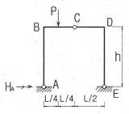
- PL/h
- PL/2h
- PL/4h
- PL/8h
(정답률: 85%)

2. 그림과 같은 단순보에 등분포 하중이 작용할 때 이 보의 단면에 발생하는 최대 휨응력은?
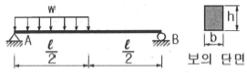
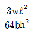
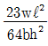
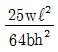
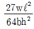
(정답률: 81%)
3. 다음 중 단면1차 모멘트의 단위로서 옳은 것은?
- cm
- cm2
- cm3
- cm4
(정답률: 88%)
4. 다음 중 부정정 구조의 해법이 아닌 것은?
- 공액보법
- 처짐각법
- 변위일치법
- 모멘트 분배법
(정답률: 75%)
5. 그림과 같은 캔틸레버 보에서 C점에 집중하중 P가 작용할 때 보의 중앙 B점의 처짐각은 얼마인가? (단, EI는 일정)
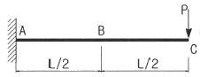
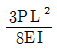
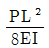
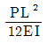
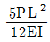
(정답률: 65%)
6. 그림(A)와 같은 장주가 10t의 하중에 견딜 수 있다면 그림(B)의 장주가 견딜 수 있는 하중의 크기는? (단, 기둥은 등질, 등단면이다.)
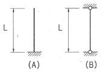
- 2.5t
- 20t
- 40t
- 80t
(정답률: 86%)
7. 다음 단순보에서 B점의 반력(RB)은?(오류 신고가 접수된 문제입니다. 반드시 정답과 해설을 확인하시기 바랍니다.)
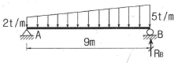
- 9t
- 13.5t
- 18t
- 21.5t
(정답률: 66%)
8. 다음 그림과 같은 구조물의 부정정 차수는?
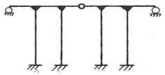
- 9차 부정정
- 10차 부정정
- 11차 부정정
- 12차 부정정
(정답률: 72%)
9. 단순보의 전 구간에 등분포하중이 작용할 때 지점의 반력이 2t이었다. 등분포 하중의 크기는? (단, 지간은 10m이다.)
- 0.1t/m
- 0.3t/m
- 0.2t/m
- 0.4t/m
(정답률: 61%)
10. 다음 그림에서 힘들의 합력 R의 위치(x)는 몇 m인가?
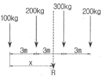
- 4.5m
- 4.75m
- 5.0m
- 5.25m
(정답률: 73%)
11. 아래 그림과 같은 보에서 굽힘모멘트에 의한 변형에너지는?
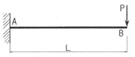
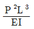
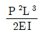
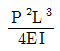
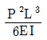
(정답률: 65%)
12. 탄성계수 E=2×106kg/cm2이고 포아송 비 v=0.3일 때 전단탄성계수 G는?
- 769231kg/cm2
- 751372kg/cm2
- 734563kg/cm2
- 710201kg/cm2
(정답률: 56%)
13. 다음 그림과 같은 보에서 A점의 수직반력은?
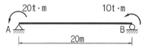
- 1.5t
- 1.8t
- 2.0t
- 2.3t
(정답률: 59%)
14. 지름 d의 원형단면인 장주가 있다. 길이가 4m일 때 세장비를 100으로 하려면 적당한 지름 d는?
- 8cm
- 10cm
- 16cm
- 18cm
(정답률: 77%)
15. 단순보의 중앙에 집중하중 P가 작용할 경우 중앙에서의 처짐에 대한 설명으로 틀린 것은?
- 탄성계수에 반비례한다.
- 하중(P)에 정비례한다.
- 단면2차 모멘트에 반비례한다.
- 지간의 제곱에 반비례한다.
(정답률: 74%)
16. 지름 10cm, 길이 100cm인 재료에 인장력을 작용시켰을 때 지름은 9.98cm, 길이는 100.4cm가 되었다. 이 재료의 포아송 비(v)는?
- 0.3
- 0.5
- 0.7
- 0.9
(정답률: 75%)
17. 30cm×40cm인 단면의 보에 9t의 전단력이 작용할때 이 단면에 일어나는 최대 전단응력은?
- 10.25kg/cm2
- 11.25kg/cm2
- 12.25kg/cm2
- 13.25kg/cm2
(정답률: 68%)
18. 그림과 같은 빗금 친 부분의 y축 도심은 얼마인가?
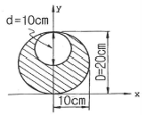
- x축에서 위로 5.43cm
- x축에서 위로 8.33cm
- x축에서 위로 10.26cm
- x축에서 위로 11.67cm
(정답률: 69%)
19. 아래 그림과 같이 C점에 500kg이 수직으로 작용할때 부재 AC의 부재력은?
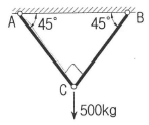
- 304.2kg
- 312.4kg
- 353.6kg
- 384.2kg
(정답률: 74%)
20. 다음 그림과 같은 정정 라멘의 C점에 생기는 휨모멘트는 얼마인가?
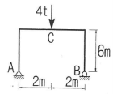
- 3tㆍm
- 4tㆍm
- 5tㆍm
- 6tㆍm
(정답률: 75%)
2과목: 측량학
21. 수준측량에서 전시와 후시의 시준거리를 같게 하여 소거할 수 있는 기계오차로 가장 적합한 것은?
- 거리의 부등에서 생기는 시준선의 대기 중 굴절에서 생긴 오차
- 기포관축과 시준선이 평행하지 않기 때문에 생긴 오차
- 온도 변화에 따른 기포관의 수축팽창에 의한 오차
- 지구의 곡률에 의해서 생긴 오차
(정답률: 73%)
22. 삼각형 3변의 길이가 25.0m, 40.8m, 50.6m일 때 면적은?
- 431.57m2
- 495.25m2
- 5⑤.49m2
- 551.27m2
(정답률: 72%)
23. 교호수준측량의 결과가 그림과 같을 때, A점의 표고가 55.423m라면 B점의 표고는?
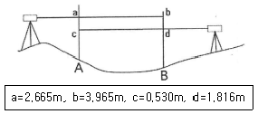
- 52.930m
- 53.281m
- 54.130m
- 54.137m
(정답률: 68%)
24. 도상에 표고를 숫자로 나타내는 방법으로 하천, 항만, 해안측량 등에서 수심측량을 하여 고저를 나타내는 경우에 주로 사용되는 것은?
- 음영법
- 등고선법
- 영선법
- 점고법
(정답률: 72%)
25. 다음 중 삼각점의 기준점성과표가 제공하지 않는 성과는?
- 직각좌표
- 경위도
- 중력
- 표고
(정답률: 72%)
26. 원곡선을 설치하기 위한 노선측량에서 그림과 같이 장애물로 인하여 임의의 점 C, D에서 관측한 결과가 ∠ACD=140°, ∠BDC =120°,
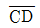
=350m이었다면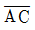
의 거리는? (단, 곡선반지름 R=500m, A=곡선시점)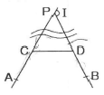
- 288.1m
- 288.8m
- 296.2m
- 297.8m
(정답률: 34%)
27. 표는 도로 중심선을 따라 20m 간격으로 종단측량을 실시한 결과이다. No.1의 계획고를 52m로 하고 -2%의 기울기로 설계한다면 No.5에서의 성토고 또는 절토고는?
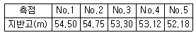
- 성토고 1.78m
- 성토고 2.18m
- 절토고 1.78m
- 절토고 2.18m
(정답률: 43%)
28. 측지학에 대한 설명으로 틀린 것은?
- 평면위치의 결정이란 기준타원체의 법선이 타원체 표면과 만나는 점의 좌표, 즉 경도 및 위도를 정하는 것이다.
- 높이의 결정은 평균해수면을 기준으로 하는 것으로 직접 수준측량 또는 간접 수준측량에 의해 결정한다.
- 천체의 고도, 방위각 및 시각을 관측하여 관측지점의 지리학적 경위도 및 방위를 구하는 것을 천문측량이라 한다.
- 지상으로부터 발사 또는 방사선 전자파를 인공위성으로 흡수하여 해석함으로써 지구자원 및 환경을 해결할 수 있는 것을 위성측량이라 한다.
(정답률: 58%)
29. 클로소이드 매개변수 A=60m이고 곡선길이 L=50m인 클로소이드의 곡률반지름 R은?
- 41.7m
- 54.8m
- 72.0m
- 100.0m
(정답률: 56%)
30. 트래버스 측량의 종류 중 가장 정확도가 높은 방법은?
- 폐합트래버스
- 개방트래버스
- 결합트래버스
- 종합트래버스
(정답률: 67%)
31. 기준면으로부터 촬영고도 4000m에서 종중복도 60%로 촬영한 사진 2장의 기선장이 99mm, 철탑의 최상단과 최하단의 시차차가 2mm 이었다면 철탑의 높이는? (단, 카메라 초점거리=150mm)
- 80.8m
- 82.5m
- 89.2m
- 92.4m
(정답률: 55%)
32. 항공사진의 특수 3점이 하나로 일치되는 사진은?
- 경사사진
- 파노라마사진
- 근사 수직사진
- 엄밀 수직사진
(정답률: 58%)
33. 폐합 트래버스에서 전 측선의 길이가 900m이고 폐합비가 1/9000일 때, 도상 폐합오차는? (단, 도면의 축척 1:500)
- 0.2mm
- 0.3mm
- 0.4mm
- 0.5mm
(정답률: 43%)
34. 클로소이드에 대한 설명으로 옳은 것은?
- 설계속도에 대한 교통량 산정 곡선이다.
- 주로 고속도로에 사용되는 완화곡선이다.
- 도로 단면에 대한 캔트의 크기를 결정하기 위한 곡선이다.
- 곡선길이에 대한 확폭량 결정을 위한 곡선이다.
(정답률: 71%)
35. 그림은 편각법에 의한 트래버스 측량 결과이다. DE측선의 방위각은? (단, ∠A48°50′40″, ∠B=43°30′30″, ∠C=46°50′00″, ∠D=60°12′45″)
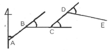
- 139°11′10″
- 96°31′10″
- 92°21′10″
- 1⑤°43′55″
(정답률: 48%)
36. 수애선을 나타내는 수위로서 어느 기간 동안의 수위 중 이것보다 높은 수위와 낮은 수위의 관측수가 같은 수위는?
- 평수위
- 평균수위
- 지정수위
- 평균최고수위
(정답률: 65%)
37. 축척 1:200으로 평판측량을 할 때, 앨리데이드의 외심거리 30mm에 의해 생기는 도상 외심오차는?
- 0.06mm
- 0.15mm
- 0.18mm
- 0.30mm
(정답률: 60%)
38. 축척 1:5000 지형도(30cm×30cm)를 기초로 하여 축척이 1:50000인 지형도(30cm×30cm)를 제작하기 위해 필요한 축척 1:5000 지형도의 매수는?
- 50매
- 100매
- 150매
- 200매
(정답률: 68%)
39. 50m의 줄자를 사용하여 길이 1250m를 관측할 경우, 줄자에 의한 거리측량 오차를 50m에 대하여 ±5mm라고 가정한다면 전체 길이의 거리 측정에서 생기는 오차는?
- ±20mm
- ±25mm
- ±30mm
- ±35mm
(정답률: 56%)
40. 노선의 횡단측량에서 No.1+15m 측점의 절토 단면적이 100m2, No.2 측점의 절토 단면적이 40m2일 때 두 측점 사이의 절토량은? (단, 중심말뚝 간격=20m)
- 350m3
- 700m3
- 1200m3
- 1400m3
(정답률: 41%)
3과목: 수리학
41. 비에너지(Specific Energy)에 관한 설명으로 옳지 않은 것은?
- 한계류인 경우 비에너지는 최대가 된다.
- 상류인 경우 수심의 증가에 따라 비에너지가 증가한다.
- 사류인 경우 수심의 감소에 따라 비에너지가 증가한다.
- 어느 수로단면의 수로 바닥을 기준으로 하여 측정한 단위 무게의 물이 가지는 흐름의 에너지이다.
(정답률: 55%)
42. 초속 20m/s, 수평과의 각 45°로 사출된 분수가 도달하는 최대 연직 높이는? (단, 공기 및 기타 저항은 무시한다.)
- 10.2m
- 11.6m
- 15.3m
- 16.8m
(정답률: 40%)
43. 유체에서 1차원 흐름에 대한 설명으로 옳은 것은?
- 면만으로는 정의될 수 없고 하나의 체적요소의 공간으로 정의되는 흐름
- 여러 개의 유선으로 이루어지는 유동면으로 정의되는 흐름
- 유동특성이 1개의 유선을 따라서만 변화하는 흐름
- 유동특성이 여러 개의 유선을 따라서 변화하는 흐름
(정답률: 60%)
44. 관내의 흐름에서 레이놀즈 수(Reynolds number)에 대한 설명으로 옳지 않은 것은?
- 레이놀즈 수는 물의 동점성 계수에 비례한다.
- 레이놀즈 수가 2000보다 작으면 층류이다.
- 레이놀즈 수가 4000보다 크면 난류이다.
- 레이놀즈 수는 관의 내경에 비례한다.
(정답률: 54%)
45. 최적수리단면(수리학적으로 가장 유리한 단면)에 대한 설명으로 틀린 것은?
- 동수반경(경심)이 최소일 때 유량의 최대가 된다.
- 수로의 경사, 조도계수, 단면이 일정할 때 최대유량을 통수시키게 하는 가장 경제적인 단면이다.
- 최적수리단면에서는 직사각령 수로 단면이나 사다리꼴 수로 단면이나 모두 동수반경이 수심의 절반이 된다.
- 기하학적으로는 반원 단면이 최적수리단면이나 시공상의 이유로 직사각형 단면 또는 사다리꼴 단면이 주로 사용된다.
(정답률: 52%)
46. A 저수지에서 1km 떨어진 B 저수지에 유량 8m3/s를 송수한다. 저수지의 수면차를 10m로 하기 위한 관의 지름은? (단, 마찰손실만을 고려하고 마찰손실 계수 f=0.03이다.)
- 2.15m
- 1.92m
- 1.74m
- 1.52m
(정답률: 54%)
47. 개수로의 흐름이 사류일 때를 나타내는 것은? (단, h : 수심, hc : 한계수심, Fr : Froude 수)
- h<hc, Fr<1
- h<hc, Fr>1
- h>hc, Fr<1
- h>hc, Fr>1
(정답률: 45%)
48. 삼각 위어(weir)에서 θ=60°일 때 월류 수심은? (단, Q : 유량, C : 유량계수, H : 위어 높이)
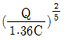
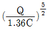
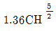
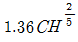
(정답률: 40%)
49. 그림과 같은 사다리꼴 인공수로의 유적(A)과 동수 반경(R)은?
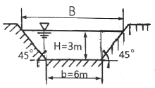
- A=27m2, R=2.64m
- A=27m2, R=1.86m
- A=18m2, R=1.86m
- A=18m2, R=2.64m
(정답률: 50%)
50. 밑면이 7.5m×3m이고 깊이가 4m인 빈 상자의 무게가 4×105N이다. 이 상자를 물 속에 완전히 가라앉히기 위하여 상자에 넣어야 할 최소 추가 무게는? (단, 물의 단위 무게=9800N/m3)
- 340000N
- 375000N
- 400000N
- 482000N
(정답률: 36%)
51. 오리피스에서 지름이 1cm, 수축단면(vena contracta)의 지름이 0.8cm이고 유속계수(Cv)가 0.9일 때 유량계수(C)는?
- 0.584
- 0.720
- 0.576
- 0.812
(정답률: 36%)
52. 2개의 수조를 연결하는 길이 1m의 수평관속에 모래가 가득 차 있다. 양수조의 수위하는 0.5m이고 투수계수가 0.01cm/s이면 모래를 통과할 때의 평균유속은?
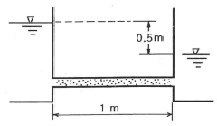
- 0.⑤cm/s
- 0.0025cm/s
- 0.0⑤cm/s
- 0.0075cm/s
(정답률: 55%)
53. 물의 밀도에 대한 차원으로 옳은 것은?
- [FL-4T2]
- [FL-1T2]
- [FL-2T]
- [FL]
(정답률: 42%)
54. 지하수에서의 Darcy의 법칙에 대한 설명으로 틀린 것은?
- 지하수의 유속은 동수경사에 비례한다.
- Darcy의 법칙에서 투수계수의 차원은 [LT-1]이다.
- Darcy의 법칙은 지하수의 흐름이 정상류라는 가정에서 성립된다.
- Darcy의 법칙은 주로 난류로 취급했으며 레이놀즈 수 Re>2000의 범위에서 주로 잘 적용된다.
(정답률: 53%)
55. 흐름의 상태를 나타낸 것 중 옳지 않은 것은? (단, t=시간, ℓ=공간, v=유속)
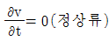
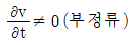
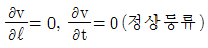
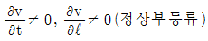
(정답률: 63%)
56. 임의로 정한 수평기준면으로부터 유선 상의 해당 지점까지의 연직거리를 의미하는 것은?
- 기준수두
- 위치수두
- 압력수두
- 속도수두
(정답률: 47%)
57. 물의 성질에 대한 설명으로 옳지 않은 것은?
- 물의 점성계수는 수온이 높을수록 작아진다.
- 동점성계수는 수온에 따라 변하며 온도가 낮을수록 그 값은 크다.
- 물은 일정한 체적을 갖고 있으나 온도와 압력의 변화에 따라 어느 정도 팽창 또는 수축을 한다.
- 물의 단위중량은 0℃에서 최대이고 밀도는 4℃에서 최대이다.
(정답률: 47%)
58. 그림과 같은 직사각형 평면이 연직으로 서 있을 때 그 중심의 수심을 HG 라 하면 압력의 중심 위치(작용점)를 a, b, HG로 표현한 것으로 옳은 것은?
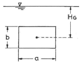
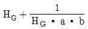
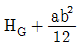
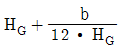
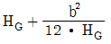
(정답률: 50%)
59. 수심 h가 폭 b에 비해서 매우 작아 R≒ h가 될 때 Chezy 평균유속계수 C는? (단, Manning의 평균유속공식 사용)
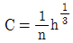
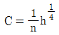
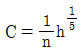
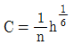
(정답률: 63%)
60. 관로상의 유량조절 밸브나 펌프의 급조작으로 유수의 운동에너지가 압력에너지로 변환되어 관 벽에 큰 압력이 작용하게 되는 현상은?
- 난류현상
- 수격작용
- 공동현상
- 도수현상
(정답률: 66%)
4과목: 철근콘크리트 및 강구조
61. 보의 유효높이 600mm, 복부의 폭 320mm, 플랜지의 두께 130mm, 양쪽의 슬래브의 중심간 거리 2.5m, 보의 경간 10.4m로 설계된 대칭 T형보가 있다. 이 보의 플랜지의 유효폭은?
- 2080mm
- 2400mm
- 2500mm
- 2600mm
(정답률: 48%)
62. 옹벽의 구조해석에서 앞부벽의 설계에 대한 설명으로 옳은 것은?
- 3변 지지된 2방향 슬래브로 설계하여야 한다.
- 저판에 지지된 캔틸레버보로 설계하여야 한다.
- T형보로 설계하여야 한다.
- 직사각형보로 설계하여야 한다.
(정답률: 63%)
63. PSC에서 콘크리트의 응력해석에서 균열 발생전 해석상의 가정으로 옳지 않은 것은?
- 콘크리트와 PS강재 및 보강철근을 탄성체로 본다.
- RC에 적용되는 강도이론을 그대로 적용한다.
- 콘크리트의 전단면을 유효하다고 본다.
- 단면의 변형률은 중립축에서의 거리에 비례한다고 본다.
(정답률: 46%)
64. 강도설계법에서 균형보의 개념을 옳게 설명한 것은?
- 콘크리트와 철근의 응력이 각각의 허용응력에 도달한 보를 말한다.
- 사용하중 상태에서 파괴형태를 고려하지 않은 보를 말한다.
- 경제적인 단면설계를 위주로 한 보를 말한다.
- 철근이 항복함과 동시에 콘크리트의 압축변형률이 0.003에 도달한 보를 말한다.
(정답률: 56%)
65. 철근콘크리트 부재에 전단철근으로 부재축에 직각으로 배치된 수직스터럽을 사용하였다. 이때 스터럽의 간격에 대한 기준으로서 옳은 것은? (단,
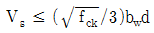
인 경우)- 0.8d 이상이어야 하고, 또한 600mm 이상이어야 한다.
- 50mm 이하이어야 한다.
- 0.5d 이하이어야 하고, 또한 600mm 이하로 하여야한다.
- 600mm 이상이어야 한다.
(정답률: 58%)
66. 표준 갈고리를 갖는 인장 이형철근의 기본정착길이 (ℓhb)를 구하는 식으로 옳은 것은? (단, 보통중량 콘크리트를 사용하고, 도막되지 않은 철근을 사용하며, db 철근의 공칭직경임)
(정답률: 45%)
67. 아래 그림과 같은 강판에서 순폭은? (단, 강판에서 의 구멍 지름(d)은 25mm이다.)
- 150mm
- 175mm
- 204mm
- 225mm
(정답률: 47%)
68. 강도 설계법에서 콘크리트의 설계기준압축강도(fck)가 45MPa 일 때 β1의 값은? (단, β1은 a=β1c에서 사용되는 계수)
- 0.714
- 0.731
- 0.747
- 0.761
(정답률: 60%)
69. 그림과 같은 전단력 P=300kN이 작용하는 부재를 용접이음하고자 할 때 생기는 전단응력은?
- 96.4MPa
- 78.1MPa
- 109.2MPa
- 84.3MPa
(정답률: 56%)
70. 경간이 8m인 캔틸레버 보에서 처짐을 계산하지 않는 경우 보의 최소 두께로서 옳은 것은? (단, 보통중량 콘크리트를 사용한 경우로서 fck=28MPa, fy=400MPa이다.)
- 1000mm
- 800mm
- 600mm
- 500mm
(정답률: 50%)
71. 아래 그림과 같은 단철근 직사각형 보의 압축연단에서 중립축까지의 거리(c)는? (단, fck=21MPa, fy=400MPa, As=2500mm2)
- 140.1mm
- 151.4mm
- 157.2mm
- 164.8mm
(정답률: 45%)
72. 위험단면에서 1방향 슬래브의 정모멘트 철근 및 부모멘트 철근의 중심 간격 규정으로 옳은 것은?
- 슬래브 두께의 2배 이하이어야 하고, 또한 300mm 이하로 하여야 한다.
- 슬래브 두께의 2배 이하이어야 하고, 또한 400mm 이하로 하여야 한다.
- 슬래브 두께의 3배 이하이어야 하고, 또한 300mm 이하로 하여야 한다.
- 슬래브 두께의 3배 이하이어야 하고, 또한 400mm 이하로 하여야 한다.
(정답률: 44%)
73. 다음 중 스터럽을 쓰는 이유로 옳은 것은?
- 보의 강성(剛性)을 높이고 사인장 응력을 받게 하기 위하여
- 콘크리트의 탄성을 높이기 위하여
- 콘크리트가 옆으로 튀어 나오는 것은 방지하기 위하여
- 철근의 조립을 위하여
(정답률: 59%)
74. 아래 그림과 같은 판형에서 stiffener(보강재)의 사용목적은?
- web plate의 좌굴을 방지하기 위하여
- flange angle의 간격을 넓게 하기 위하여
- flange의 강성을 보강하기 위하여
- 보 전체의 비틀림에 대한 강도를 크게 하기 위하여
(정답률: 59%)
75. 그림과 같은 T형보에서 fck=21MPa, fy=400MPa, As=3212mm2일 때 공칭 휨강도(Mn)는?
- 463.7kNㆍm
- 521.6kNㆍm
- 578.4kNㆍm
- 613.5kNㆍm
(정답률: 44%)
76. 다음 그림과 같은 PSC 단순보에 프리스트레스 힘 (P)을 4000kN 작용했을 때 프리스트레스에 의한 상향력은?
- 48kN/m
- 64kN/m
- 80kN/m
- 400kN/m
(정답률: 35%)
77. 전체 깊이가 900mm를 초과하는 휨부재 복부의 양측면에 부재 축방향으로 배근하는 철근의 명칭은?
- 배력철근
- 표피철근
- 피복철근
- 연결철근
(정답률: 55%)
78. 단철근 직사각형보에서 fy =400MPa, fck=28MPa일 때, 강도설계법에 의한 균형철근비(ρb)는?
- 0.0432
- 0.0384
- 0.0303
- 0.0242
(정답률: 55%)
79. 정착구와 커플러의 위치에서 프리스트레스 도입 직후 포스트텐션 긴장재의 응력은 얼마 이하로 하여야 하는가? (단, fpu : 긴장재의 설계기준 인장강도)
- 0.4fpu
- 0.5fpu
- 0.6fpu
- 0.7fpu
(정답률: 47%)
80. 강도설계법에서 사용하는 용어 중 아래의 표에서 설명하는 것은?
- 계수하중
- 공칭하중
- 고정하중
- 강도감소계수
(정답률: 56%)
5과목: 토질 및 기초
81. 사면의 경사각을 70°로 굴착하고 있다. 흙의 점착력 1.5tm2, 단위체적중량을 1.8tm3으로 한다면 이 사면의 한계고는? (단, 사면의 경사각이 70°일 때 안정계수는 4.8이다.)
- 2.0m
- 4.0m
- 6.0m
- 8.0m
(정답률: 46%)
82. 도로의 평판재하 시험에서 1.25mm 침하량에 해당하는 하중 강도가 2.50kg/cm2일 때 지지력계수(K)는?
- 20kg/cm3
- 25kg/cm3
- 30kg/cm3
- 35kg/cm3
(정답률: 39%)
83. 주동토압을 PA, 수동토압을 PP, 정지토압을 PO라고 할 때 크기의 순서는?
- PA> PP > PO
- PP > PO > PA
- PP > PA > PO
- PO > PA > PP
(정답률: 59%)
84. 다음 그림에서 X-X 단면에 작용하는 유효응력은?
- 4.26t/m2
- 5.24t/m2
- 6.36t/m2
- 7.21t/m2
(정답률: 52%)
85. 간극비(void ratio)가 0.25인 모래의 간극률(porosity)은 얼마인가?
- 20%
- 25%
- 30%
- 35%
(정답률: 50%)
86. Rod의 끝에 설치한 저항체를 땅 속에 삽입하여 관입, 회전, 인발 등의 저항으로 토층의 성질을 탐사하는 것을 무엇이라 하는가?
- Sounding
- Sampling
- Boring
- Wash boring
(정답률: 51%)
87. 포화 점토지반에 대해 베인전단시험을 실시하였다. 베인의 직경은 6cm, 높이는 12cm, 흙이 전단파괴될 때 작용시킨 회전모멘트는 180kg ㆍ cm일 때, 점착력(cu)은?
- 0.13kg/cm2
- 0.23kg/cm2
- 0.32kg/cm2
- 0.42kg/cm2
(정답률: 36%)
88. 피어기초의 수직공을 굴착하는 공법 중에서 기계에 의한 굴착공법이 아닌 것은?
- benoto 공법
- chicago 공법
- calwelde 공법
- reverse circulation 공법
(정답률: 44%)
89. 다음 중 점성토 지반의 개량 공법으로 적합하지 않은 것은?
- 샌드드레인 공법
- 치환 공법
- 바이브로플로테이션 공법
- 프리로딩 공법
(정답률: 53%)
90. 유선망에 대한 설명으로 틀린 것은?
- 유선망은 유선과 등수두선(等水頭線)으로 구성되어 있다.
- 유로를 흐르는 침투수량은 같다.
- 유선과 등수두선은 서로 직교한다.
- 침투속도 및 동수구배는 유선망의 폭에 비례한다.
(정답률: 36%)
91. 어떤 시료에 대하여 일축압축 시험을 실시한 경과 일축압축강도가 3t/m2이었다. 이 흙의 점착력은? (단, 이 시료는 ø=0°인 점성토이다.)
- 1.0t/m2
- 1.5t/m2
- 2.0t/m2
- 2.5t/m2
(정답률: 51%)
92. 두께 5m의 점토층이 있다. 압축 전의 간극비가 1.32, 압축 후의 간극비가 1.10으로 되었다면 이 토층의 압밀침하량은 약 얼마인가?
- 68cm
- 58cm
- 52cm
- 47cm
(정답률: 38%)
93. 다음 중 동상(凍上)현상이 가장 잘 일어날 수 있는 흙은?
- 자갈
- 모래
- 실트
- 점토
(정답률: 51%)
94. 예민비가 큰 점토란?
- 입자모양이 둥근 점토
- 흙을 다시 이겼을 때 강도가 크게 증가하는 점토
- 입자가 가늘고 긴 형태의 점토
- 흙을 다시 이겼을 때 강도가 크게 감소하는 점토
(정답률: 50%)
95. 아래 그림과 같은 옹벽에 작용하는 전 주동토압은 얼마인가?
- 16.2t/m
- 17.2t/m
- 18.2t/m
- 19.2t/m
(정답률: 43%)
96. 점착력이 큰 지반에 강성의 기초가 놓여 있을 때 기초바닥의 응력상태를 설명한 것 중 옳은 것은?
- 기초 밑 전체가 일정하다.
- 기초 중앙에서 최대응력이 발생한다.
- 기초 모서리 부분에서 최대응력이 발생한다.
- 점착력으로 인해 기초바닥에 응력이 발생하지 않는다.
(정답률: 50%)
97. 통일 분류법에서 실트질 자갈을 표시하는 약호는?
- GW
- GP
- GM
- GC
(정답률: 47%)
98. 다짐 에너지(Energy)에 관한 설명 중 틀린 것은?
- 다짐 에너지는 램머(Rammer)의 중량에 비례한다.
- 다짐 에너지는 다짐 층수에 반비례한다.
- 다짐 에너지는 시료의 부피에 반비례한다.
- 다짐 에너지는 다짐 횟수에 비례한다.
(정답률: 47%)
99. 간극률 50%, 비중 2.50인 흙에 있어서 한계동수 경사는?
- 1.25
- 1.50
- 0.50
- 0.75
(정답률: 44%)
100. Terzaghi의 극한 지지력 공식 에 대한 설명으로 틀린 것은?
- Nc, Nγ, Nq는 지지력계수로서 흙의 점착력으로부터 정해진다.
- 식 중 α, β는 형상계수이며 기초의 모양에 따라 정해진다.
- 연속기초에서 α=1.0이고, 원형기초에서 α=1.3의 값을 가진다.
- B는 기초폭이고, Df는 근입깊이다.
(정답률: 48%)
6과목: 상하수도공학
101. 합리식에서 사용하는 강우강도 공식에 관한 설명으로 틀린 것은?
- Talbot형 공식, Sherman형 공식 등이 이에 속한다.
- 공식 중의 정수(상수)는 지표형태에 따라 결정된다.
- 강우지속기간의 증가에 따라 강우강도는 감소한다.
- 임의의 지속기간에 대한 강우강도를 구하는데 사용된다.
(정답률: 28%)
102. 다음과 같은 조건에서의 급속여과지 면적은?
- 5.0m2
- 8.33m2
- 12.5m2
- 14.58m2
(정답률: 42%)
103. 계획우수량 산정의 고려 사항으로 틀린 것은?
- 최대계획우수유출량의 산정은 합리식에 의하는 것을 원칙으로 한다.
- 유출계수는 토지이용도별 기초유출계수로부터 총괄 유출계수를 구하는 것을 원칙으로 한다.
- 하수관거의 확률년수는 10~30년, 빗물펌프장의 확률년수는 30~50년을 원칙으로 한다.
- 최상류관거의 끝으로부터 하류관거의 어떤 지점까지의 거리를 계획유량에 대응한 유속으로 나눈 것을 유달시간으로 한다.
(정답률: 28%)
104. 펌프의 비교회전도(Ns)에 대한 설명으로 옳지 않은 것은?
- Ns가 클수록 높은 곳까지 양정할 수 있다.
- Ns가 클수록 유량은 많고 양정은 작은 펌프이다.
- 유량과 양정이 동일하면 회전수가 클수록 Ns가 커진다.
- Ns가 같으면 펌프의 크기에 관계없이 대체로 형식과 특성이 같다.
(정답률: 31%)
1⑤. 분류식 하수관거 계통과 비교하여 합류식 하수관거 계통의 특징에 대한 설명으로 옳지 않은 것은?
- 검사 및 관리가 비교적 용이하다.
- 청천 시 관내에 오염물이 침전되기 쉽다.
- 하수처리장에서 오수 처리비용이 많이 소요된다.
- 오수와 우수를 별개의 관거 계통으로 건설하는 것보다 건설비용이 크게 소요된다.
(정답률: 51%)
106. 상수도 배수시설에 대한 설명으로 옳은 것은?
- 계획배수량은 해당 배수구역의 계획1일 최대급수량을 의미한다.
- 소규모의 수도 및 배수량이 적은 지역에서는 소화용 수량은 무시한다.
- 배수지에서의 배수는 펌프가압식을 원칙으로 한다.
- 대용량 배수지 설치보다 다수의 배수지를 분산시키는 편이 안정급수 관점에서 효과적이다.
(정답률: 30%)
107. 완속여과와 급속여과에 대한 설명으로 옳지 않은 것은?
- 완속여과는 모래층과 모래층 표면에 증식하는 미생물막에 의해 수중의 불순물을 포착하여 산화분해하는 정수방법이다.
- 급속여과는 원수 중의 현탁물질을 약품침전시킨 후 분리하는 방법이다.
- 완속여과는 유입수의 수질이 비교적 양호한 경우에사용할 수 있다.
- 대규모 처리시에는 급속여과가 적당하나 완속여과에 비해 넓은 시설면적이 필요하다.
(정답률: 44%)
108. 활성슬러지 공법으로 하수를 처리할 때 포기량을 결정하기 위한 조건으로서 가장 중요한 것은?
- 하수의 중금속 농도
- 하수의 BOD 농도
- 하수의 탁도
- 하수의 pH
(정답률: 40%)
109. 저수지나 배수지의 용량을 구할 때 사용하는 방법으로 옳은 것은?
- 리플법(Ripple's Method)
- 합리식 방식(Rational Method)
- 랜니법(Rammey Method)
- 하디-크로스법(Hardy-Cross Method)
(정답률: 37%)
110. 상수도 정수처리의 응집-침전에 관한 설명으로 옳은 것은?
- 플록형성지 내의 교반강도는 하류로 갈수록 점차 증가시키는 것이 바람직하다.
- Jar Teater는 종침강속도(terminal velocity)를 구하는 기기이다.
- 고분자응집제는 응집속도는 크나 pH에 의한 영향을 크게 받는다.
- 침전지의 침전효율을 나타내는 기본적인 지표로는 표면부하율(surface loading)이 있다.
(정답률: 34%)
111. 배수관에서 분기하여 각 수요자에게 먹는 물을 공급하는 것을 목적으로 하는 시설은?(오류 신고가 접수된 문제입니다. 반드시 정답과 해설을 확인하시기 바랍니다.)
- 도수시설
- 취수시설
- 급수시설
- 배수시설
(정답률: 41%)
112. 계획취수량의 기준이 되는 수량으로 옳은 것은?
- 계획1일평균급수량
- 계획1일최대급수량
- 계획시간최대급수량
- 계획1일1인평균급수량
(정답률: 50%)
113. 오수관거 및 우수관거의 최소관경에 대한 표준으로 옳은 것은?
- 오수관거 100mm, 우수관거 150mm
- 오수관거 150mm, 우수관거 100mm
- 오수관거 200mm, 우수관거 250mm
- 오수관거 250mm, 우수관거 200mm
(정답률: 42%)
114. 생활하수 내에서 존재하는 질소의 주요 형태는?
- N2와NO3
- N2와 NH3
- 유기성 질소화합물과 N2
- 유기성 질소화합물과 NH3
(정답률: 39%)
115. 상수원 선정 시 고려사항으로 옳지 않는 것은?
- 계획취수량은 평수기에 확보 가능한 수량으로 한다.
- 수리권이 확보될 수 있어야 한다.
- 건설비 및 유지 관리비가 저렴하여야 한다.
- 장래 수도시설의 확장이 가능한 곳이 바람직하다.
(정답률: 28%)
116. 성공적인 하수슬러지 퇴비화를 위한 조사사항으로 거리가 먼 것은?
- 함유된 중금속 성분 조사
- 수요량 및 용도 조사
- CO2 발생량 조사
- 슬러지 처리 공정에서의 첨가물 조사
(정답률: 32%)
117. 지반고가 50m인 지역에 하수관을 매설하려고 한다. 하수관의 지름이 300mm일 때, 최소 흙두께를 고려한 관로 시점부의 관저고(관 하단부의 표고)는?
- 49.7m
- 49.5m
- 49.0m
- 48.7m
(정답률: 24%)
118. 생물학적 처리에 주요한 역할을 하는 미생물은?
- 균류
- 박테리아
- 원생동물
- 조류
(정답률: 41%)
119. 집수매거(infiltration galleries)에 대한 설명으로 옳은 것은?
- 복류수를 취수하기 위하여 지중(池中)에 매설한 유공관거 설비
- 관로의 수두를 감소시키기 위한 설비
- 배수지의 유입수 수위조절과 양수를 위한 설비
- 피압지하수를 취수하기 위하여 지하의 대수층까지 삽입한 관거 설비
(정답률: 31%)
120. Manning 공식의 조도계수 n=0.012, 동수경사가 1/1000이고 관경이 250mm일 때 유량은?
- 142m3/hr
- 92m3/hr
- 73m3/hr
- 53m3/hr
(정답률: 29%)
라멘의 무게는 P이고, 수직반력은 L이므로 A 지점에서의 수평반력은 PL에 비례한다.
하지만 이것만으로는 정확한 값을 구할 수 없다. A 지점에서의 수평반력은 라멘의 무게와 수직반력이 어떻게 분배되는지에 따라 달라지기 때문이다.
이를 구하기 위해서는 라멘의 중심축을 기준으로 모멘트의 균형을 이용해야 한다.
라멘의 중심축은 중앙에 위치하므로, 수직반력 L은 중심축을 지나는 수직선상에 위치하게 된다. 따라서 L에 의한 모멘트는 0이 된다.
따라서 A 지점에서의 수평반력 HA에 의한 모멘트는 P×h가 되어야 한다.
이를 이용해 HA를 구하면,
HA×2h = P×h
HA = P×h/2h = PL/2h = PL/8h
따라서 정답은 "PL/8h"이다.